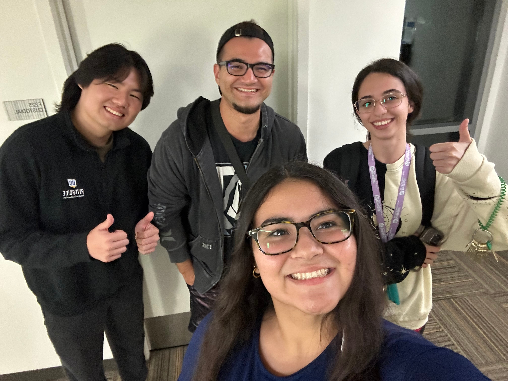

As an RA, I oversee the Honors Living Learning Community in Glen Mor Campus Apartments, are support 60+ residents in 2nd through 4th year as they navigate university as returning students. I help refer students to resources, mediate conflicts, and respond to emergencies when serving on call as the RA on Duty! Overall, I love this job and my friends on the Glen Mor Team :D